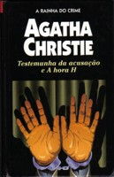

Testemunha da Acusação e A Hora H
Witness for the Prosecution and Towards Zero
Testemunha da acusação é uma das peças mais famosas de Agatha Christie. Leonard Vole, um sujeito tranqüilo e amável, é um dia acusado do assassinato de uma solteirona que morava com a governante e oito gatos. No testamento, ela fazia dele seu único herdeiro. Os fatos são simples e incontestáveis, e Leonard está prestes a ir para a prisão. Um detalhe, porém, pode mudar os rumos do seu julgamento. O argumento de A hora H é inspirado no livro A casa do penhasco, com uma diferença: a autora substitui Hercule Poirot pelo sagaz superintendente Battle por considerar que este personagem tem “uma personalidade mais apropriada para os palcos” do que a do detetive belga.